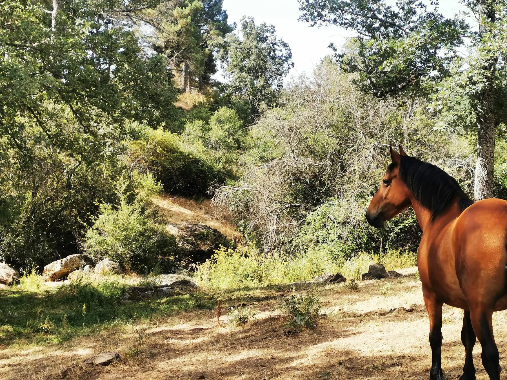

En busca del paraíso
Una promesa: volver a reunirlos para siempre.
Las manadas viven repartidas en fincas alquiladas. El gran sueño del Santuario es comprar un único hogar propio, seguro y definitivo.
El origen del sueño
Neska cambió la urgencia en compromiso.
En diciembre de 2021, Neska, una potra de cinco años, se rompió una pata. Fue trasladada y operada de urgencia, pero no pudieron salvarla. Vivía en otra finca porque los habitantes están repartidos en varios terrenos de alquiler.
Antes de despedirse, María Dolores sostuvo su cabeza y le prometió que nunca dejaría de buscar un lugar donde todos pudieran estar juntos. Esa promesa sigue viva en cada paso de esta campaña.
Pronto estaremos todos juntos. No dejaré de buscar el paraíso de Winston.
Objetivo
600.000 €30.000 personas × 20 €Una finca propia cambia todo.
Estabilidad para los animales, menos desplazamientos entre fincas, mayor capacidad de supervisión y la tranquilidad de saber que ningún contrato de alquiler puede dejar a 46 caballos sin hogar.
El hogar definitivo
Toda piedra hace pared.
Con una aportación y un gesto tan sencillo como compartir, ayudas a acercar a las manadas a una finca segura para siempre.
Ir a la campañaSeguimiento de la campaña
Un punto común para la información pública.
El Centro de Transparencia está preparado para reunir futuras actualizaciones y documentos públicos verificables relacionados con las campañas del Santuario.